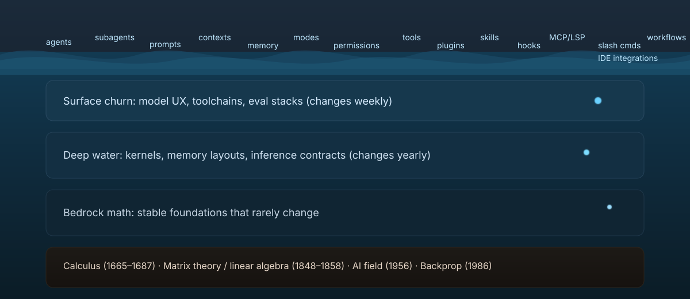

Model + Kernel Matrix
A visual map of what the C Kernel Engine supports: IR templates, kernel families, quant contracts, and pipeline coverage (inference-only vs. inference + v7 training). Grounded in the actual templates, IR lowering passes, and GGUF test corpus run locally.
One Pipeline, Every Model
Every supported family enters through the same deterministic compile path. The artifact (GGUF) carries the numbers, the template carries the structure, and lowering turns both into a concrete C runtime with a fixed memory plan. Vision families add a second lane that produces an encoder prefix and bridges it into the decoder.
QKV bias from weights · BPE tokenizer
version/v8/scripts/cks-v8-run run \
hf://Qwen/Qwen2-0.5B-Instruct-GGUF/qwen2-0_5b-instruct-q4_k_m.gguf \
--context-len 1024 --force-compile --force-convert --chat-template=auto \
--generate-visualizerNo QKV bias · BPE tokenizer · learned QK‑Norm
version/v8/scripts/cks-v8-run run \
hf://Qwen/Qwen3-0.6B-GGUF/Qwen3-0.6B-Q8_0.gguf \
--context-len 1024 --force-compile --force-convert --chat-template=auto \
--generate-visualizerQK‑Norm (full‑attn only) · SwiGLU · Gated DeltaNet · BPE tokenizer
Block pattern: 3×recurrent → 1×full_attention
<think> / </think> markers on the built-in C tokenizer path and moved visible vs. suppressed thinking into the exported chat contract, instead of relying on Python-tokenizer fallback.
version/v8/scripts/cks-v8-run run \
hf://unsloth/Qwen3.5-0.8B-GGUF/Qwen3.5-0.8B-Q4_K_M.gguf \
--context-len 1034 --force-compile --force-convert --chat-template=qwen35 \
--generate-visualizerPost-norms · embed scale √dim · SentencePiece
rope_layout metadata and select the matching rope_qk kernel automatically.
version/v8/scripts/cks-v8-run run \
hf://unsloth/gemma-3-270m-it-GGUF/gemma-3-270m-it-Q5_K_M.gguf \
--context-len 1024 --force-compile --force-convert --chat-template=auto \
--generate-visualizerGGUF decoder + mmproj runtime · thinking-mode control
version/v8/scripts/cks-v8-run run \
hf://Qwen/Qwen3-VL-8B-Instruct-GGUF/Qwen3VL-8B-Instruct-Q4_K_M.gguf \
--mmproj hf://Qwen/Qwen3-VL-8B-Instruct-GGUF/mmproj-Qwen3VL-8B-Instruct-Q8_0.gguf \
--image-path version/v8/test_assets/v8_vision_doc_card_72.png \
--prompt 'Explain this image.' \
--context-len 1024 --force-compile --force-convert \
--thinking-mode suppressedBPE tokenizer · attention bias · GGUF + safetensors conversion lane
version/v8/scripts/cks-v8-run run \
hf://unsloth/GLM-4-9B-0414-GGUF/GLM-4-9B-0414-Q4_K_M.gguf \
--context-len 1024 --force-compile --force-convert --chat-template=glm4 \
--prompt 'Give me a detailed example of C, Python and SQL code.' \
--max-tokens 256 --temperature 0.0 --generate-visualizerExplicit prefill/decode MLA cache contract · DeepSeek-style reference kernels
mla_kv_cache_store and switches mla_attention to deepseek_mla_attention_decode_f32; prefill inserts mla_kv_cache_batch_store.
.venv/bin/python -m py_compile version/v8/scripts/build_ir_v8.py
make build/libckernel_engine.so
.venv/bin/python unittest/test_deepseek_reference_kernels.py
.venv/bin/python -m unittest tests.test_v8_kimi_templateHybrid full/sliding attention · per-layer theta · SentencePiece
rope_forward_qk_split_direct_f32 from IR data rather than hard-coding a Gemma-only kernel.
version/v8/scripts/cks-v8-run run \
hf://unsloth/gemma-4-E4B-it-GGUF/gemma-4-E4B-it-Q4_K_M.gguf \
--context-len 2048 --force-compile --force-convert --chat-template=gemma4 \
--prompt 'Give me a detailed example of C code.' \
--max-tokens 256 --temperature 0.0 --generate-visualizerversion/v8/scripts/cks-v8-run run \
hf://unsloth/gemma-4-E4B-it-GGUF/gemma-4-E4B-it-Q4_K_M.gguf \
--mmproj hf://unsloth/gemma-4-E4B-it-GGUF/mmproj-F16.gguf \
--image-path version/v8/test_assets/v8_vision_doc_card_72.ppm \
--prompt 'Explain this image in one short paragraph.' \
--context-len 1024 --chat-template=gemma4 \
--max-tokens 8 --temperature 0.0ReLU2 MLP · Q5_0/Q4_K/Q8_0 GGUF · BPE tokenizer
[heads, head_dim, state_dim], not a square DeltaNet-style recurrent matrix. The template/lowering path now carries that contract explicitly, stores no-RoPE attention KV after v_proj, and generated BPE runtimes can encode raw prompts end-to-end by default.
version/v8/scripts/cks-v8-run run \
hf://bartowski/nvidia_NVIDIA-Nemotron-Nano-9B-v2-GGUF/nvidia_NVIDIA-Nemotron-Nano-9B-v2-Q4_K_M.gguf \
--context-len 1024 --force-compile --force-convert --chat-template=auto \
--prompt 'Give me a detailed example of C, Python and SQL code.' \
--max-tokens 256 --temperature 0.0 --generate-visualizerUntied LM head supported · SentencePiece · ChatML markers via GGUF
output.weight, and treats Nanbeige long coherent think traces as model behavior instead of a kernel/parity failure.
version/v8/scripts/cks-v8-run run \
hf://mradermacher/Nanbeige4.1-3B-GGUF/Nanbeige4.1-3B.Q4_K_M.gguf \
--context-len 1024 --force-compile --force-convert --chat-template=auto \
--generate-visualizerQKV bias · tied embeddings · BPE tokenizer
projector prep → Gemma4 decoder bridge · deterministic patch frontend
position_embeddings_add_gemma4v_xy and spatial_average_pool_contiguous for the Gemma4 merge path instead of Qwen3-VL's 2×2 spatial merge.
learned position embeddings · GELU MLP · reusable encoder contract
Kernel Families by Model
IR + Quant Contracts
Supported Quant + DType Coverage
Weight-only quantized GEMM/GEMV kernels with BF16/FP32 activations and Q8_* activation contracts. Quantized kernels (Q4_K, Q5_K, Q6_K, Q8_0) are verified against both PyTorch and llama.cpp reference output — both references must agree before a kernel is considered validated.
src/kernels/deltanet_kernels.c for FP32 Gated DeltaNet parityHybrid Architecture Support
Full
qwen35.json template with hybrid block pattern: 3×recurrent → 1×full_attention.
Recurrent blocks: x → [q,k,v,z] + [beta,alpha] → conv(q/k/v) → DeltaNet state update S_t → RMSNorm(h) * SiLU(z) → outproj.
Full-attention blocks: q_gate_proj → split_q_gate → k/v_proj → qk_norm → rope → gated_attention → sigmoid_mul → outproj.
Dedicated kernel parity in src/kernels/deltanet_kernels.c (forward + backward).
Compatible with Qwen3.5-0.8B dense variant.
Treat it as a composed graph: causal attention + sigmoid gate multiply + output projection. Keep it stitched in CK unless profiling proves a fused epilogue is worth the extra maintenance.
Interpretation: DeltaNet earns a dedicated kernel because it mutates recurrent state; gated attention usually does not, because the gate is just an elementwise epilogue on top of otherwise standard attention.
Why Build C Kernel Engine?
This stack forces us to understand the invariants that actually matter: memory layout, kernel contracts, numerical stability, and graph scheduling. It turns the model into something we can inspect — dump activations, trace tensor ranges, validate gradients later — without guessing what’s happening inside a framework. That clarity is the foundation for training on CPU.

Current GGUF Test Corpus
Bring-up note: if a Llama-family/Nanbeige first reply starts with <think> or echoes
<|im_start|>assistant, the runtime is using the wrong chat wrapper or stop policy.
Preserve GGUF-exported ChatML markers and keep output.weight untied. For Gemma, if first-token parity collapses after a clean qk_norm stage, check the exported rope_layout before suspecting tokenizer or stop-token bugs.
Recent Bring-up Fixes
rope_layout and choose the matching RoPE kernel automatically.
<think> markers are preserved as special tokens, and visible vs. suppressed thinking is now a generic chat-contract mode instead of ad hoc runtime logic.
output.weight preserved. Nanbeige remains an active inference lane; long coherent think traces are treated as model style, not as evidence of kernel breakage.
ck_run_v8.py raw prompts work end-to-end; token-id-only fallback remains available with CK_DISABLE_FULL_BPE_TOKENIZER=1.
Validation Commands (v7 inference matrix)
These commands are the current inference readiness gates for Qwen2, Qwen3, Qwen3.5, Gemma3, and the active Nanbeige bring-up lane.
python3 version/v7/scripts/validate_model_matrix_v7.py
python3 version/v7/scripts/validate_parity_matrix_v7.py
python3 version/v7/scripts/validate_long_decode_stability_v7.py
# Nanbeige-specific stitched call-IR regression
python3 version/v7/scripts/test_kv_cache_batch_copy_call_ir_v7.py \
--run-dir ~/.cache/ck-engine-v7/models/mradermacher--Nanbeige4.1-3B-GGUF
Matrix validators honor cached GGUFs by default; add --allow-download when you want them to fetch missing models.